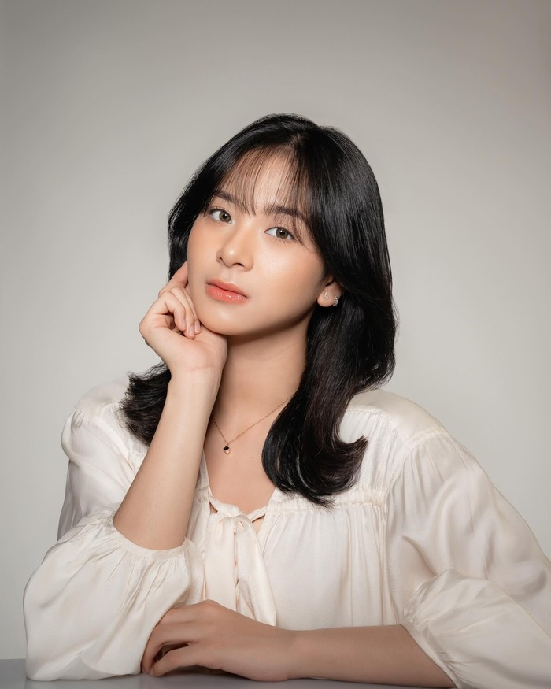

Azizi Shafaa Asadel
Aktris, Penyanyi, dan Penari Indonesia
"Si gadis tomboi yang semangatnya meletup-letup! Halo semuanya, aku Zee."
Deskripsi Singkat
Azizi Shafaa Asadel, dikenal sebagai Zee Asadel adalah pemeran, penyanyi, dan penari Indonesia. Azizi adalah mantan anggota grup idola JKT48 generasi ketujuh yang diperkenalkan pada 29 September 2018. Ia lulus dari JKT48 pada 25 Agustus 2024, setelah mengumumkan kelulusannya sebelumnya pada 7 April 2024.
Profil Resmi
- Nama: Azizi Shafaa Asadel
- Nama Panggilan: Zee/Zee Asadel
- Tanggal Lahir: 16 Mei 2004
- Golongan Darah: O
- Zodiak: Taurus
- Tinggi Badan: 162 cm
Pengalaman Kerja & Karier
Aktris Seni Peran – Film & Serial
Kalian Pantas Mati (2022): Debut akting layar lebar sebagai pemeran utama wanita bernama Dini.
Ancika: Dia yang Bersamaku 1995 (2024): Berperan sebagai tokoh utama wanita utama, Ancika.
Happy Birth-Die (2024): Berperan sebagai Zaphira Diamantina dalam Vidio Original Series.
Sekotengs (2024): Berperan sebagai Maudy Subrata.
Anggota Idola Grup – JKT48
29 September 2018 - Bergabung dengan JKT48 sebagai Siswa Kelas B Akademi JKT48
30 Oktober 2018 - Dipromosikan ke Kelas A Akademi
05 Oktober 2019 - Dipromosikan ke Tim J
14 Maret 2021 - Dipindahkan ke Formasi Baru JKT48
Riwayat Pendidikan
Universitas Terbuka
S1, Sastra Inggris
Universitas Terbuka
S1, Ilmu Komunikasi (mengundurkan diri)
Universitas Pradita
D3, Seni Kuliner (mengundurkan diri)